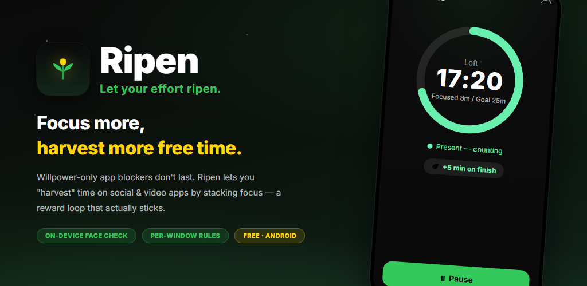
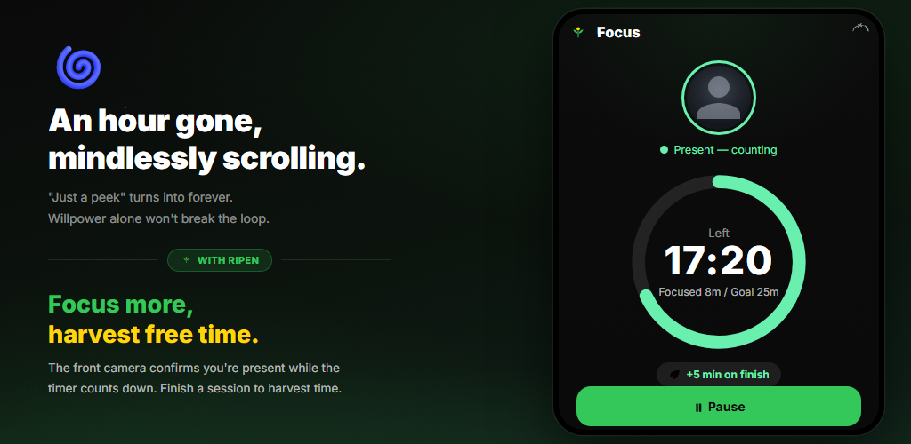
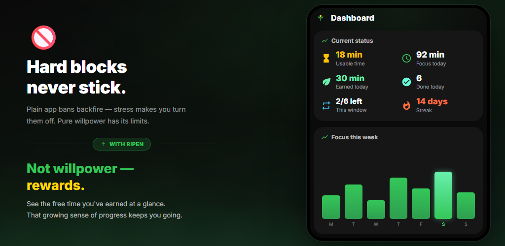
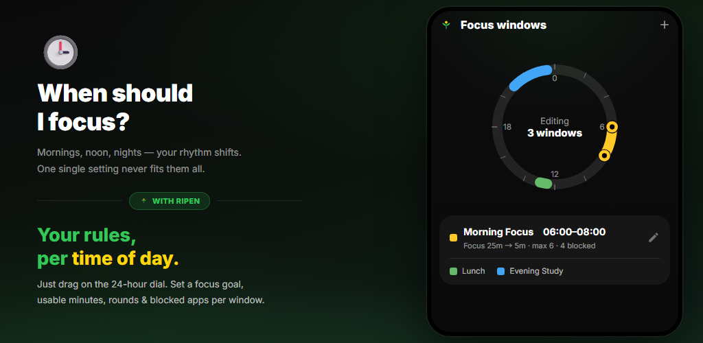
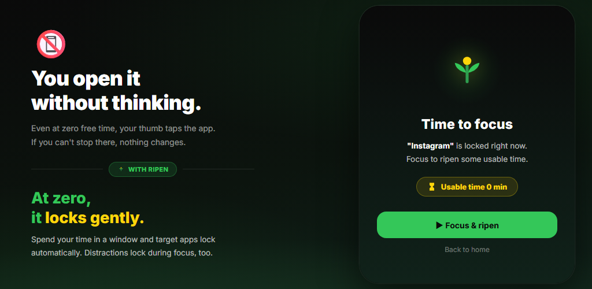

ごほうびループ
集中タイマーを完走するたびに、SNS・動画に使える自由時間を獲得。ガマンではなく報酬で行動が変わります。
ガマンで縛るアプリブロックは続かない。Ripen は、集中や勉強を積み重ねるほど SNS・動画の自由時間を"収穫"できる、ごほうび式の習慣化アプリ。在席判定はすべて端末内で行います。
Android 8.0以上 · 完全無料 · アカウント登録不要

複雑な設定は不要。決めるのは「いつ・どれだけ集中したら・どれだけ使えるか」だけ。
朝・夜など、集中したい時間帯と目標を設定
前面カメラが「在席」を確認しながらカウントダウン
完走するたびに、使える時間を獲得
残り0分になると対象アプリをそっとブロック
集中タイマーは「在席（顔がある）」の間だけ進みます。完走すると、設定した分だけSNSや動画に使える時間を獲得。ガマンではなく報酬で続きます。

「使える時間」「今日の集中」「連続日数」を一目で確認。週・月の推移グラフや、集中しやすい時間帯の分析も。数字が伸びるほど、もっと続けたくなります。

24時間ダイヤルをなぞるだけで、集中したい時間帯を複数設定。時間帯ごとに集中目標・使える分・回数・禁止アプリを変えられます。時間帯の外では自由です。

その時間帯で使える時間を使い切ると、対象アプリを自動でブロック。集中セッション中も、気が散るアプリをロックします。設定を緩めるのを防ぐ「設定ロック」も。

「やめたいのに、やめられない」を、報酬で変える。
集中タイマーを完走するたびに、SNS・動画に使える自由時間を獲得。ガマンではなく報酬で行動が変わります。
前面カメラで「画面の前にいるか」だけを判定。すべて端末内で処理し、画像の保存・送信はしません。
朝・昼・夜など複数の時間帯を設定。時間帯ごとに集中目標・使える分・回数・禁止アプリを変えられます。
時間帯に入った瞬間から先に使える無料枠。集中ゼロでも少し使え、集中報酬に上乗せされます。
設定をいじって余暇を盛るのを防ぐコミットメント機能。緩める変更には数日のクールダウンを課します。
集中の推移・集中カレンダー・完走率・最も集中できる時間帯・禁止アプリ利用の推移まで可視化。
「集中判定にカメラ」と聞くと不安になるもの。Ripenはプライバシーを最優先に設計しています。
顔の在席判定はオンデバイスのML Kitで完結。映像が外部サーバーに送られることはありません。
判定するのは「顔があるか」だけ。写真や映像を保存することも、クラウドへ送ることも一切ありません。
集中記録や設定はすべてデバイス内に保存。アンインストールすればデータも残りません。
登録・ログイン一切不要。ダウンロードしてすぐに使い始められます。
Google Play からすぐにダウンロードできます